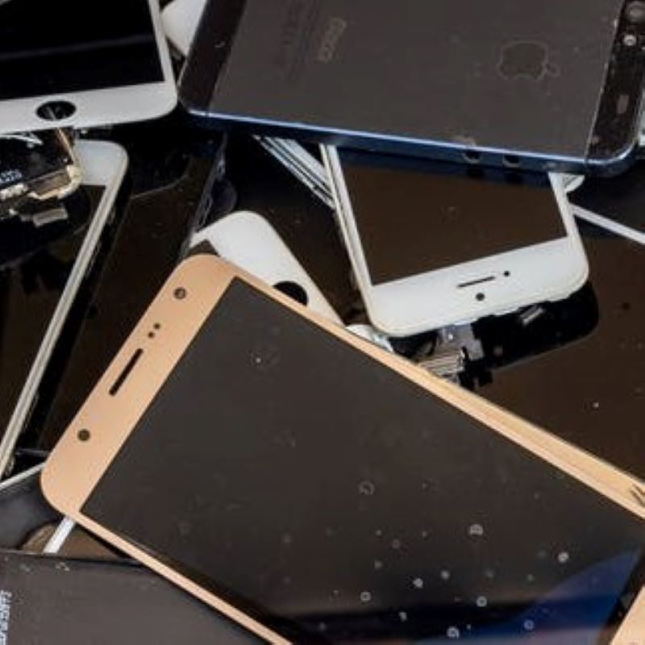

Problems:
Electronics all break down eventually, and when that time comes, they can be either repaired or discarded. With some exception, most people choose to discard and replace. Many people discard and replace things like their phones before they even break down. The electronic disposal process results in lots of toxic byproducts. CD's are littered on curbsides to decompose over thousands of years. Lightbulbs, filled with mercury, are constantly disposed of incorrectly. Phones and computers are stripped of precious metals, especially gold and copper, resulting in metal sludge and wastewater.
Process of Degradation:
Electronic waste does not degrade naturally. It is composed of plastic and metals, both completely inorganic and sometimes toxic materials. They must be discarded at their proper facilities.
Take Action:
While there is no perfect solution to the electronic waste problem, we can alleviate it by simply reducing our consumption of electronics. This means not buying the latest phones immediately after they're released, or reselling and purchasing used electronics.

Return Home to Learn More
Problems:
Electronics all break down eventually, and when that time comes, they can be either repaired or discarded. With some exception, most people choose to discard and replace. Many people discard and replace things like their phones before they even break down. The electronic disposal process results in lots of toxic byproducts. CD's are littered on curbsides to decompose over thousands of years. Lightbulbs, filled with mercury, are constantly disposed of incorrectly. Phones and computers are stripped of precious metals, especially gold and copper, resulting in metal sludge and wastewater.
Process of Degradation:
Electronic waste does not degrade naturally. It is composed of plastic and metals, both completely inorganic and sometimes toxic materials. They must be discarded at their proper facilities.